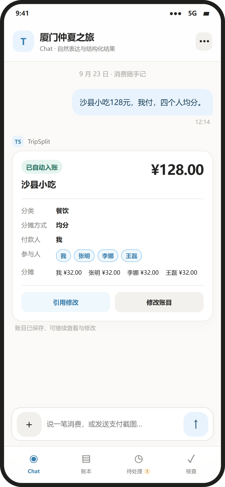
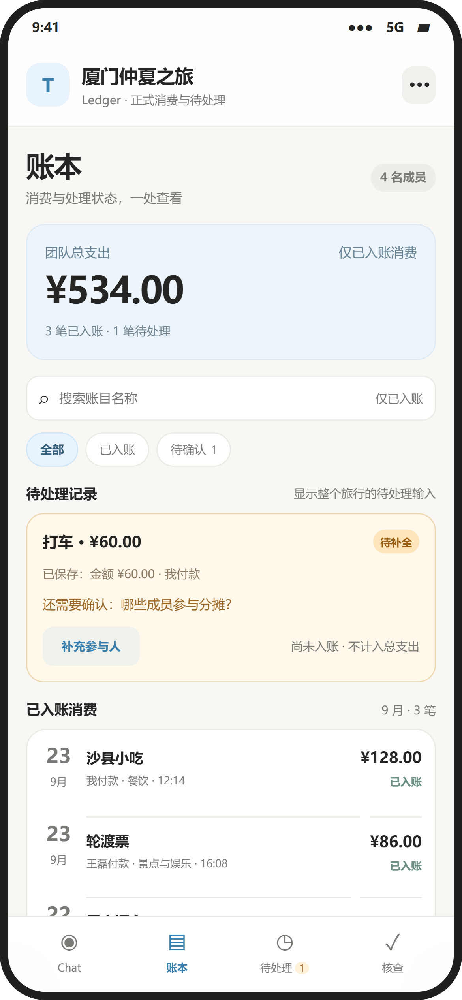

FEATURED CASE STUDY01
TripSplit
AI 旅行分账助手


左右滑动查看 Chat / Ledger · 演示数据
把零散消费，整理成可核对、可结算的旅行账本。
我的职责需求规划 · 交互与入账策略 · 核账方案 · 原型验证
查看完整案例AI 旅行分账助手


左右滑动查看 Chat / Ledger · 演示数据
把零散消费，整理成可核对、可结算的旅行账本。
我的职责需求规划 · 交互与入账策略 · 核账方案 · 原型验证
查看完整案例港科大 MSc IT · 计算机技术背景
有实际开发经历，也参与过产品从 0 到 1 的实习实践。持续关注并应用 AI 技术，在用户需求、实现约束和产品体验之间做判断。
海外背景，英语可作为工作语言。